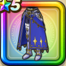

世界樹の鎧下
攻略班 7.0点 / 麻痺耐性+5%暴嵐の四天王への耐性+10%麻痺耐性+5%攻撃減耐性+10%攻撃減耐性+10%【バトマス】スキルの斬撃ダメージ+2%イオ属性斬撃・体技ダメージ+5%
くわしい特徴
【レベル別習得スキル】 Lv1麻痺耐性+5% Lv5暴嵐の四天王への耐性+10% Lv8すばやさ+5 Lv10麻痺耐性+5% Lv12【バトマス】スキルの斬撃ダメージ+2% Lv15イオ属性斬撃・体技ダメージ+5% Lv18攻撃減耐性+10% Lv20【バトマス】きようさ+5 Lv23守備力+7 Lv25攻撃減耐性+10% 【限界突破スキル】 1凸攻撃力+5 2凸守備力+5 3凸すばやさ+7 4凸さいだいHP+10